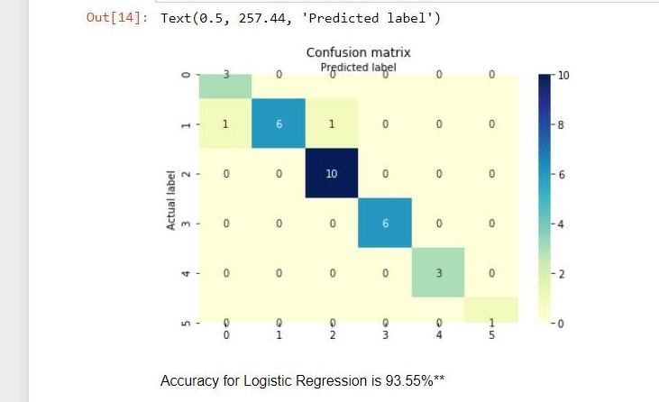
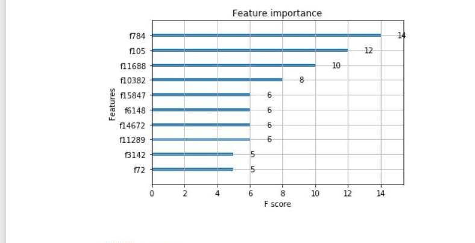
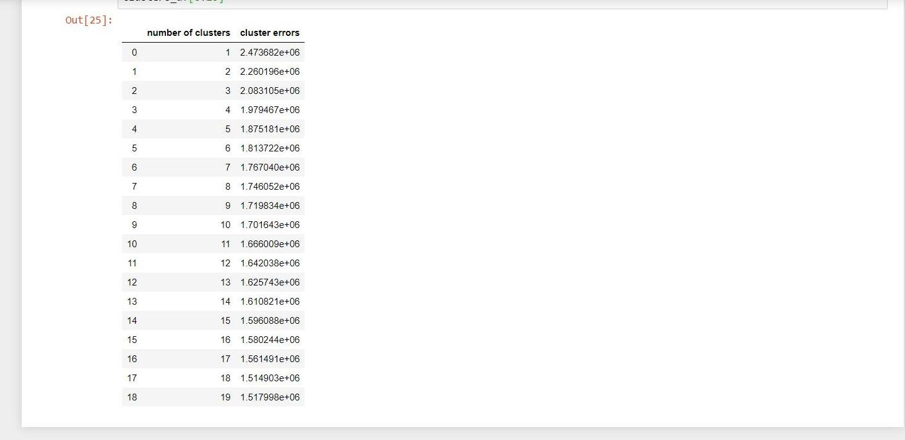
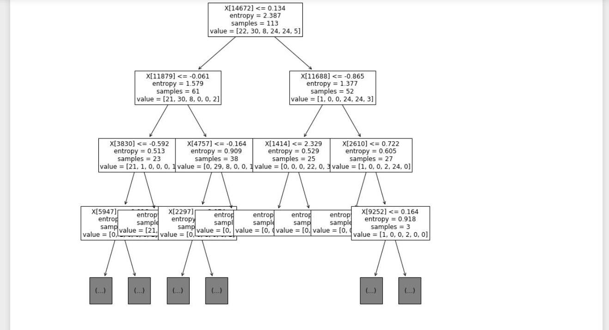

About
For this project, the data I am exploiting is a dataset from the CuMiDa
repository that contains 78 handpicked cancer microarray datasets.
In this dataset the main features are the gene expression levels
of 54676 genes in the columns from 151 breast cancer cell samples in the rows.
Furthermore, the five different cancer cells will be present
as well and the target will be the different cancer cells that
the amount of genes are present.
The question I want to answer is which cancer cells have
the most genes found in them and which models and neural networks
would have the best accuracy for this dataset?
In this dataset I found that there are 41 basal cell types,
30 luminal_B cell types, 30 HER cell types, 29 luminal_A cell types,
14 cell line cell types, and finally 7 normal cell types.
Documentation
The Data Science techniques I used was Logistic Regression, XGBoost,
K Means, and Decision Tree Classification.
After implementing each of these techniques I found that logistic regression
had the highest accuracy, with 93.55%.
Logistic Regression Confusion Matrix Results

XGBoost Results

K Means Cluster Errors Results

Decision Tree Classification Results

Source Code
The source code is found on my:
Github